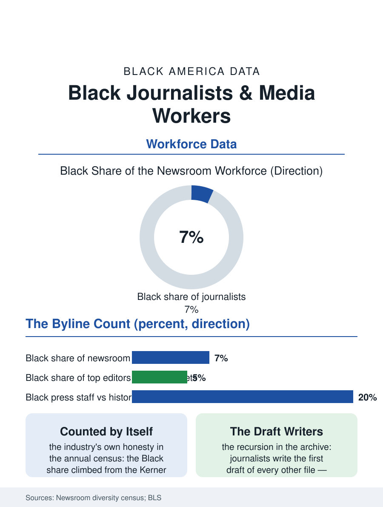

Black Employment
The Draft Writers: Black Journalists and Media Workers
Half a century of the industry's own census: Black journalists at half their population share, keeping the record everyone else's file is drawn from. The journalism file.

Black journalists work in an industry whose product is the public record and whose own record, the newsroom diversity census the industry conducts on itself, has documented a half century of underrepresentation: Black journalists run at roughly half their population share of the news workforce, concentrated in the community and Black press whose own employment file is a shadow of its historic scale. This article reads the journalism workforce file.
The Newsroom Census
The industry's self-survey, conducted annually for decades by the news leaders' associations, gives the file its longitudinal honesty: the Black share of the newsroom workforce climbed from the Kerner Commission era's low single digits, when the commission named the media's whiteness a cause of the civil disorders' misunderstanding, to a plateau in the low teens at the century's turn in the best years, and has since eroded with the industry's contraction, the buyout and layoff waves shedding the most recent hires first in the pattern of every contracting workforce in this section. The beat and rank distribution sharpens the count: Black journalists cluster in the metro, community, and sports desks, thin in the national, investigative, and editorial leadership tiers, and the masthead data, the top editors whose names the diversity reports now track separately, show the decision tier's Black share in the single digits at the major outlets. The Black press's own workforce is the file's elegy and its seedbed in one: the historic weeklies' staffs, once the training ground and the employer of several thousand, contracted with the advertising base the business file records, while the digital Black media, the online outlets and the newsletter and podcast economy, rebuilt a smaller, more leveraged workforce on the platform economics of the current era.
Assignments, Sources, and the Pipeline
The workforce's internal file is the assignment's: the studies of beat allocation and story assignment record the Black journalist steered toward the race story and away from the finance desk, the expertise ghetto whose residents' careers the promotion data then price, while the source relationship runs the other way, the Black reporter's access to the community's trust being the newsroom's asset in every crisis the community files describe. The pipeline runs through the journalism schools and the internship economy, whose unpaid terms filter by the wealth file in the standard pattern, and through the professional associations, the National Association of Black Journalists founded in the Kerner aftermath as the workforce's guild, whose job fairs and advocacy are the industry's standing corrective institution. The contraction's geography composes the file's civic stakes: the local news collapse, the two thousand papers closed in the current era's count, has fallen hardest on the coverage of exactly the institutions the Black community's civic file runs on, the school board, the council, the courthouse, so that the workforce's shrinkage and the accountability's shrinkage are the same number read from two sides.
The Record's Keepers
The journalism file closes on the workforce's distinctive self-knowledge: it is the only trade in this section whose members write the first draft of all the others' files, and its composition therefore shapes the archive from which the whole atlas is drawn, a recursion the historians of the Black press have always understood, the Defender's and the Courier's correspondents having created the record the Great Migration is known by. The current generation's file includes the data and audience roles the digital newsroom added, where the Black workforce's share runs higher than the reporting ranks', and the ownership file's thin tier, the Black-owned outlets of the media business file, whose journalists work under the double mandate of the market and the mission. The industry counts its newsroom in the annual census and publishes the gap without flinching, a transparency the file honors as the precondition of the corrections it has yet to make. The final entry is the Kerner Commission's sentence, now more than fifty years in the file and still the workforce's loadstone: the nation is moving toward two societies, and the media, the commission said, bear a portion of the responsibility for the division, a portion the bylines' arithmetic still measures, one newsroom census at a time. The census takers of the craft expect to keep counting for as long as the gap persists.
More in Black Employment
The Black Unemployment Rate: The Two-to-One Pattern
Black unemployment runs at roughly twice the White rate — 5.5 percent against 3.3 percent in annual averages — a ratio stable across five decades of federal data. How it is measured and why it persists.
Black Median Weekly Earnings: The 80-Cent Ratio
Black full-time workers earn a median of about $900 a week — roughly 80 cents for every dollar White workers earn. The BLS earnings data by group, gender, and occupation.
Black Labor Force Participation: Working at National Rates
Black labor force participation runs at roughly the national rate — and Black women participate at higher rates than White women. The BLS participation data.
Source: American Society of News Editors and RTDNA newsroom diversity censuses; Bureau of Labor Statistics occupational data.